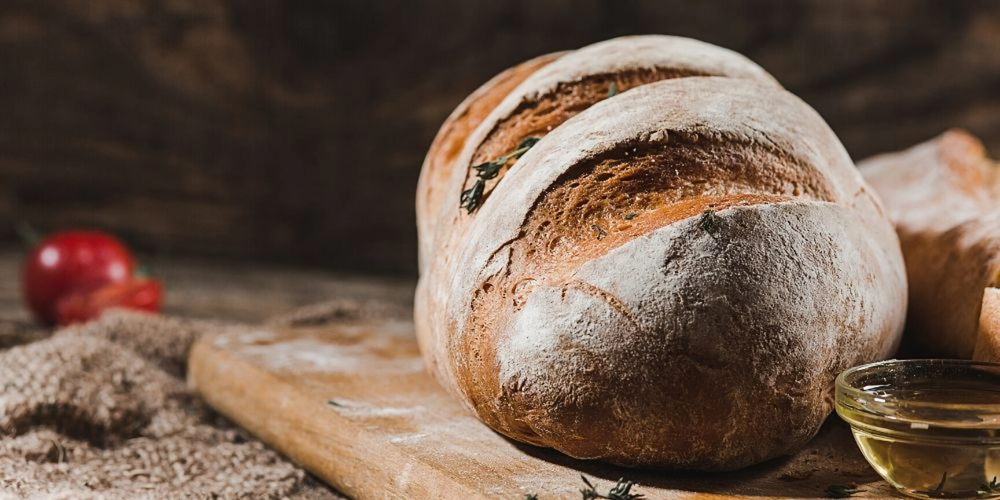

PAN CASERO
Ingredientes
- 1/2 kg. de harina
- 6g. de levadura fresca (o 2g. de levadura seca)
- 1 cda. de sal
- 375ml. de agua
Modo de preparación
- Colocar en un bol la harina en forma de corona (con un huequito en el medio). Poner alrededor la sal. Es importante ponerla alrededor para que no toque, en principio, la levadura.
- Disolver la levadura en el agua a temperatura ambiente o levemente tibia y colocarla en el hueco de la harina.
- Mezclar con la mano hasta que se una todo bien.
- Una vez que esté todo bien mezclado y esté hecha la masa, plegarla como lo hago en el video, unas 4 ó 5 veces (como si fuera un sobre).
- Dejar descansar, tapada con un repasador, unos 15 minutos.
- Tras estos 15 minutos la masa habrá cambiado: repetir el pliegue una vez más y llevar el bol a la heladera, tapado con papel film. Lo dejaremos así toda la noche, unas 10-12 horas.
- Tras este tiempo, enharinar la mesada y sacar con cuidado la masa del bol. Formar los panes como queramos, siempre sin maniupular demasiado la masa. Yo hice tipo chapatas pero puede hacerse un solo pan de campo con toda la masa, volviendo a doblarla com “sobre”. Tambien pueden hacerse pequeños panes redondos.
- Colocar en la fuente, tapar con un repasador (limpito, Marta) y dejar reposar una media hora más. Opcional: hacé unas hendiduras al pan y untalo con aceite de oliva, el mío estaba macerado con romero.
- Llevar a horno precalentado a temperatura máxima unos 40 minutos. Un secreto: si ponés una fuente en el horno y le ponés medio vasito de agua, esto hará vapor y el pan no se secará.